Fundamentals of
Data Analytics and
Predictions
Unsupervised
Xi (Rossi) LUO
Department of Biostatistics and Data Science
School of Public Health
The University of Texas Health Science Center at Houston
Unsupervised vs. Supervised Learning
- Most of this course focuses on supervised learning methods such as regression and classification
- In that setting we observe both a set of features $X_1,X_2,...,X_p$ for each object, as well as a response or outcome variable $Y$. The goal is then to predict $Y$ using $X_1,X_2,...,X_p$
- Here we instead focus on unsupervised learning, where we observe only the features $X_1,X_2,...,X_p$. We are not interested in prediction, because we do not have an associated response variable Y
The Goals of Unsupervised Learning
- The goal is to discover interesting things about the measurements: Can we discover subgroups among the variables or among the observations?
- Principle component analysis, a tool used for data visualization or data pre-processing before applying supervised learning
- Clustering, a broad class of methods for discovering unknown subgroups in data
- It is often easier to obtain unlabeled data - from a lab instrument or a computer - than labeled data, which can require human intervention
The Challenge of Unsupervised Learning
- Unsupervised learning is more subjective than supervised learning, as there is no simple goal for the analysis, such as prediction of a response
- But techniques for unsupervised learning are of growing importance in a number of fields:
- Subgroups of breast cancer patients grouped by their gene expression measurements,
- Groups of shoppers characterized by their browsing and purchase histories
- Movies grouped by the ratings assigned by movie viewers.
Clustering
- Clustering refers to a very broad set of techniques for finding subgroups, or clusters, in a data set
- We seek a partition of the data into distinct groups so that the observations within each group are quite similar to each other
- We must define what it means for two or more observations to be similar or different
- This is often a domain-specific consideration that must be made based on knowledge of the data being studied
Example: Clustering for Market Segmentation
- Supervised learning: Suppose we have access to a large number of measurements (e.g. median household income, occupation, distance from nearest urban area, and so forth) for a large number of people
- Our goal is to perform market segmentation by identifying subgroups of people who might be more receptive to a particular form of advertising, or more likely to purchase a particular product
- The task of performing market segmentation amounts to clustering the people in the data set
Clustering Methods
- K-means clustering:
- partition the observations into a pre-specified number of clusters
- Hierarchical clustering
- We do not know in advance how many clusters we want
- We end up with a tree-like visual representation of the observations, called a dendrogram, that allows us to view the clusterings obtained for each possible number of clusters, from 1 to n
K-means Clustering
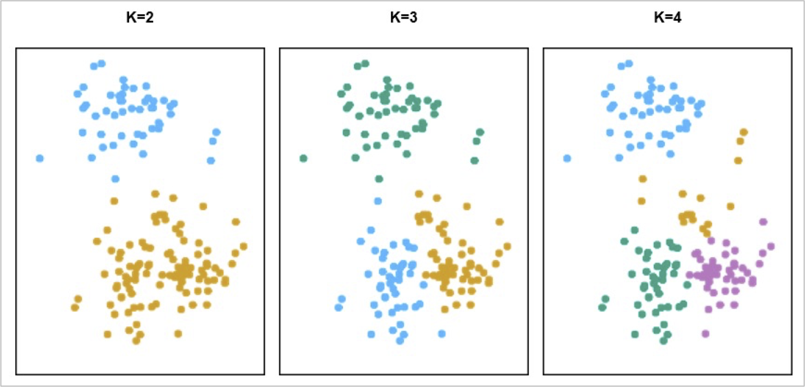Details of K-means Clustering—1
- Let $C_1, . . . , C_K$ denote sets containing the indices of the observations in each cluster. These sets satisfy two properties:
- $C_1 \cup C_2 \cup . . . \cup C_K $= {1, . . . , n}. Each observation belongs to at least one of the K clusters
- $C_k \cup C_{k'} =\emptyset$ for all $ k \neq k'$. The clusters are non-overlapping: no observation belongs to more than one cluster
- For instance, if the ith observation is in the kth cluster, then $i \in C_k$
Details of K-means Clustering—2
- The idea behind K-means clustering is that a good clustering is one for which the within-cluster variation is as small as possible
- The within-cluster variation for cluster $C_k$ is a measure $WCV(C_k)$ of the amount by which the observations within a cluster differ from each other
- Hence, we want to solve the problem: $$ \min_{C_1,...,C_k} {\sum_{k=1}^{K}{WCV(C_k)}}$$
- This formula says that we want to partition the observations into K clusters such that the total within-cluster variation, summed over all K clusters, is as small as possible
How to Define Within Cluster Variation?
- Typically, we use Euclidean distance $$WCV(C_K)=\frac{1}{|C_k|}\sum_{i,i' \in C_K}\sum_{j=1}^{p}(x_{ij}-x_{i'j})^2$$ where $|C_k|$ denotes the number of observations in the kth cluster
- Hence, the optimization problem that defines K-means clustering, $$ \min_{C_1,...,C_k} ({\frac{1}{|C_k|}\sum_{i,i' \in C_K}\sum_{j=1}^{p}(x_{ij}-x_{i'j})^2})$$
K-Means Clustering Algorithm
- Initial cluster assignments; randomly assign a number, from 1 to K, to each of the observations
- Iterate until the cluster assignments stop changing:
- For each of the K clusters, compute the cluster centroid. The kth cluster centroid is the vector of the p feature means for the observations in the kth cluster.
- Assign each observation to the cluster whose centroid is closest (where closest is defined using Euclidean distance).
K-Means Example
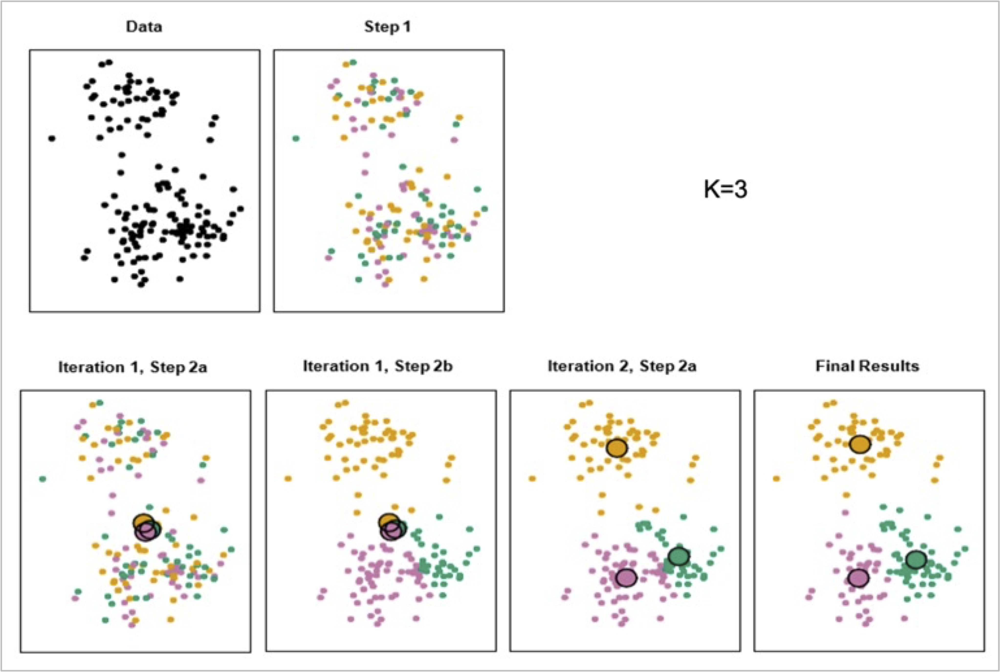K-Means Example Step 1
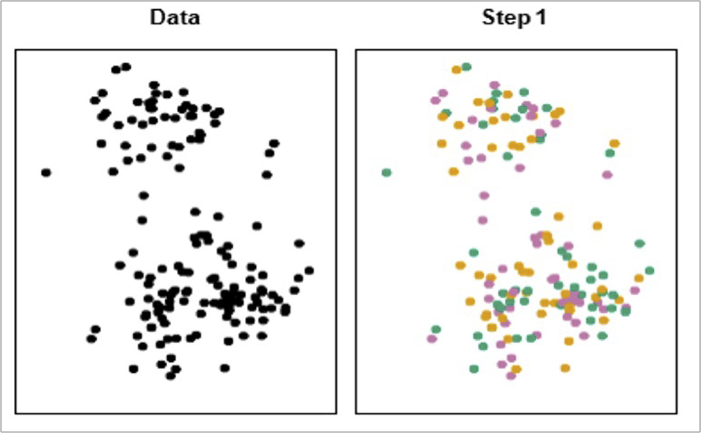
- The observations are shown.
- In Step 1 of the algorithm, each observation is randomly assigned to a cluster.
K-Means Example Step 2a
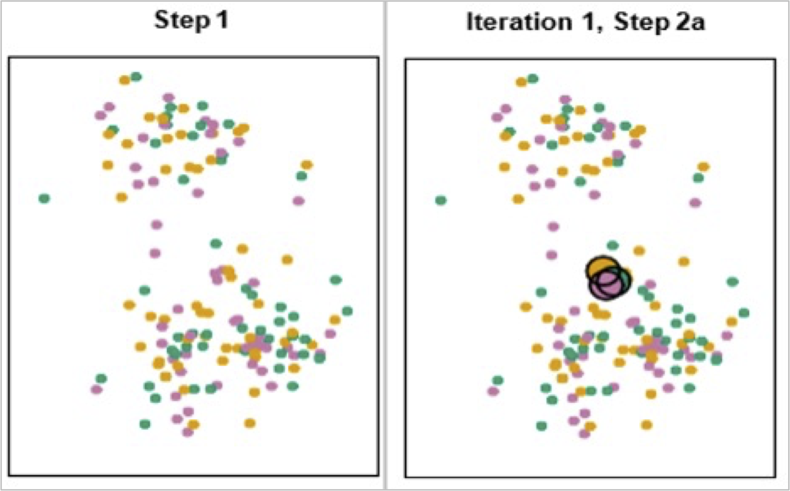
- In Step 2(a), the cluster centroids are computed.
- These are shown as large colored disks
- Initially the centroids are almost completely overlapping because the initial cluster assignments were chosen at random
K-Means Example Step 2b
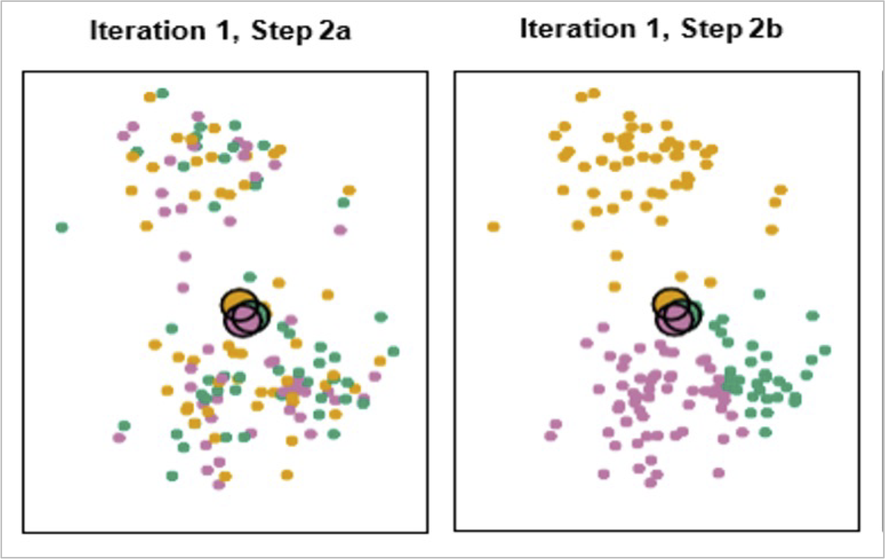
- In Step 2(b), each observation is assigned to the nearest centroid.
K-Means Example Iterations and Final Result
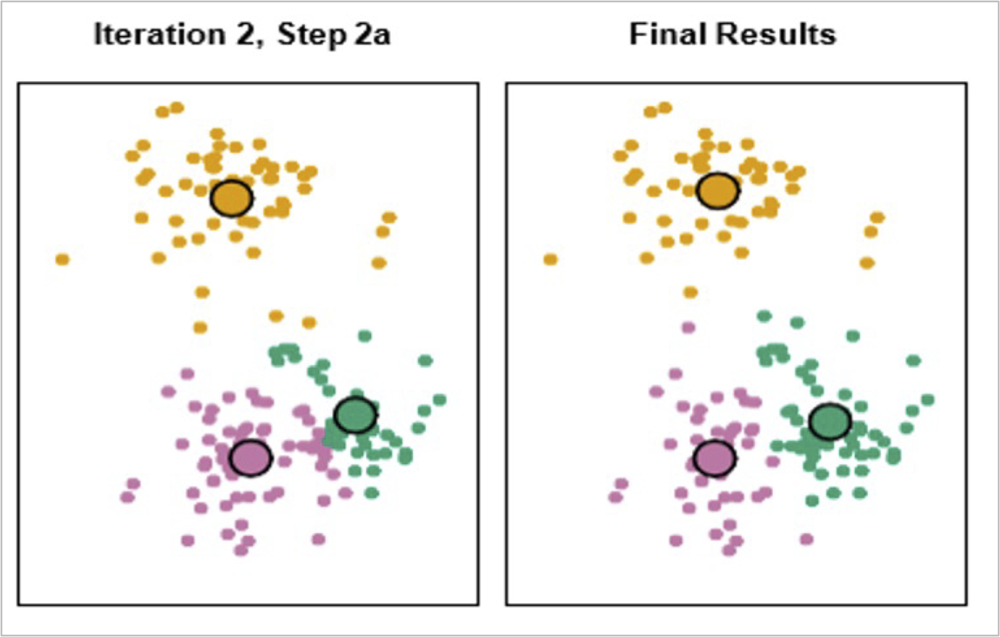
- Step 2(a) is once again performed, leading to new cluster centroids
- The results obtained after 10 iterations.
K-Means Differing Starting Points—1
- K-means clustering performed six times on the data from previous figure with K = 3, each time with a different random assignment of the observations in Step 1
- Above each plot is the value of the objective function
K-Means Differing Starting Points—2
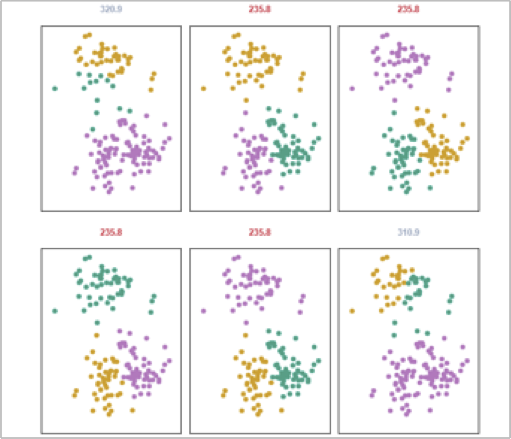
- Three different local optima were obtained, one of which resulted in a smaller value of the objective and provides better separation between the clusters
- Those labeled in red all achieved the same best solution, with an objective value of 235.8
Hierarchical Clustering
- K-means clustering requires us to pre-specify the number of clusters K
- This can be a disadvantage
- Hierarchical clustering is an alternative approach which does not require that we commit to a particular choice of K
- In this section, we describe bottom-up clustering
- This is the most common type of hierarchical clustering and refers to the fact that a dendrogram is built starting from the leaves and combining clusters up to the trunk
Hierarchical Clustering: The Idea
- Builds a hierarchy in a “bottom-up” fashion...
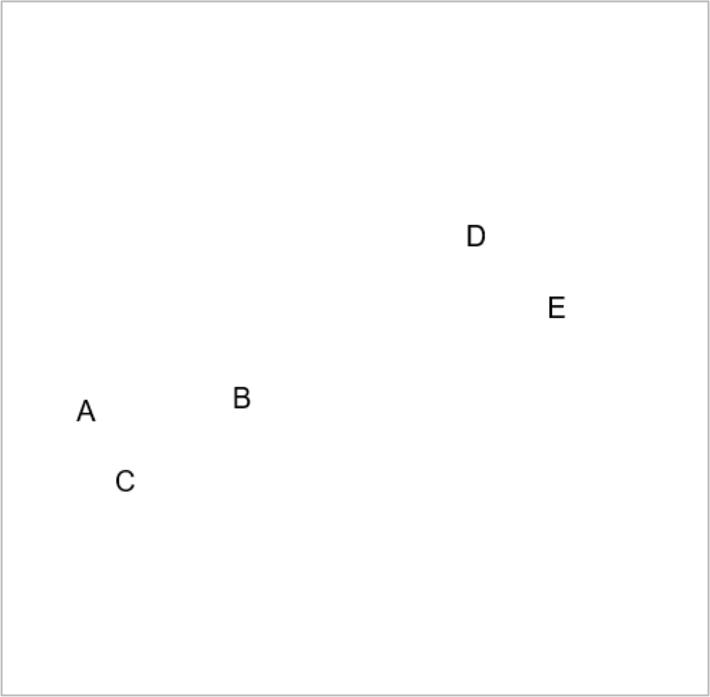
Hierarchical Clustering Algorithm
- Start with each point in its own cluster
- Identify the closest two clusters and merge them
- Repeat
- Ends when all points are in a single cluster
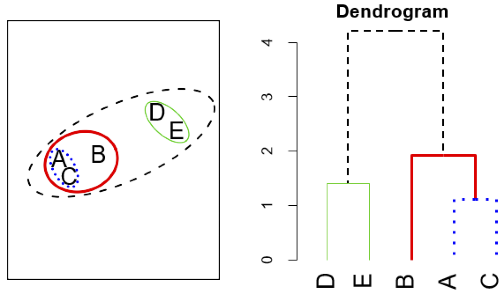
Hierarchical Example—1
- 45 observations generated in 2D space
- There are three distinct classes, shown in separate colors
- However, we will treat these class labels as unknown and will seek to cluster the observations in order to discover the classes from the data
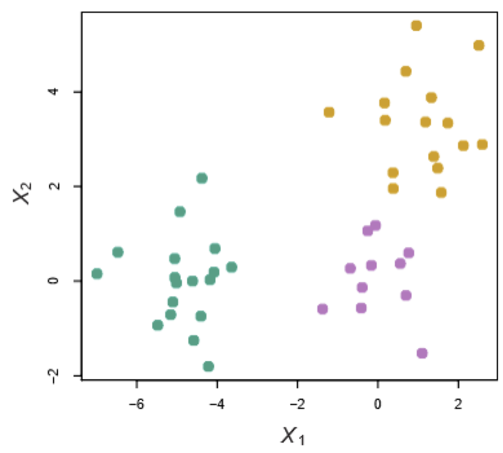
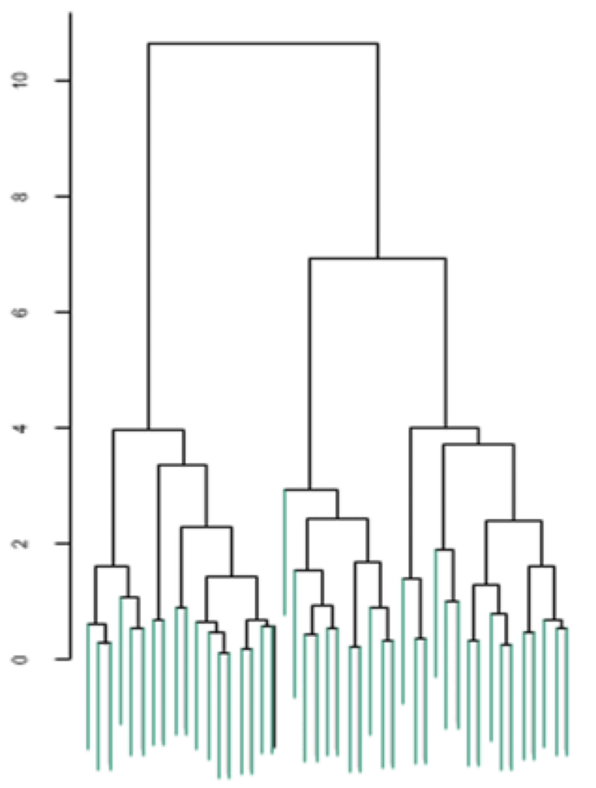
Hierarchical Example—2
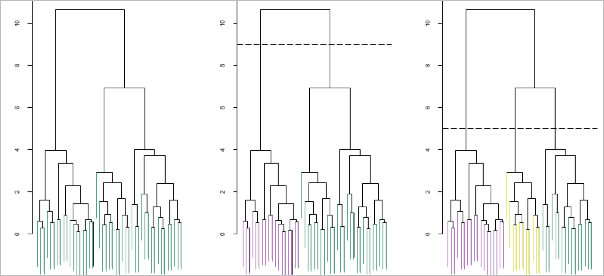Hierarchical Example—3
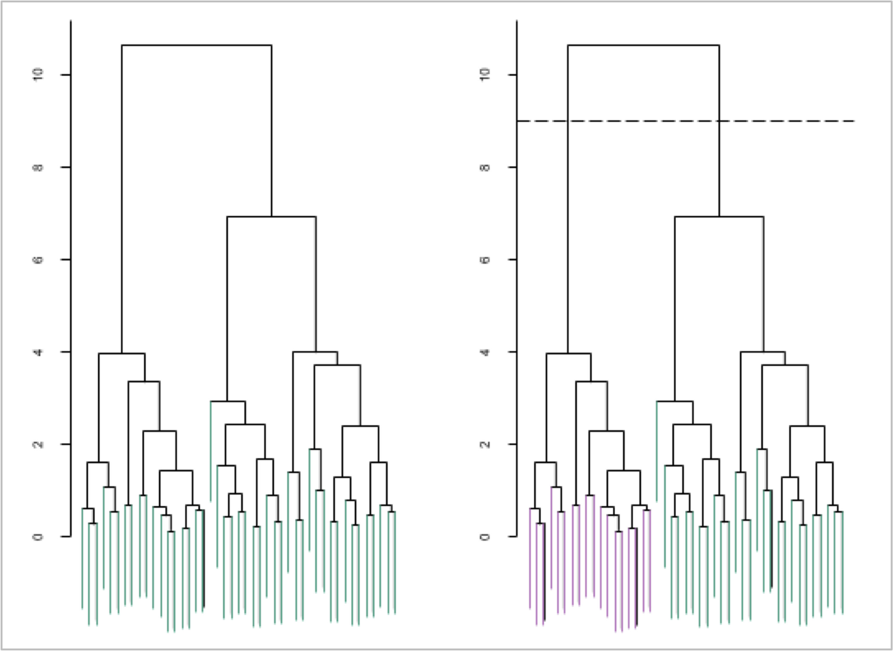
- Left: Dendrogram obtained from hierarchically clustering the data from previous slide, with complete linkage and Euclidean distance
- Right: The dendrogram from the left-hand panel, cut at a height of 9 (indicated by the dashed line). This cut results in two distinct clusters, shown in different colors.
Hierarchical Example—3
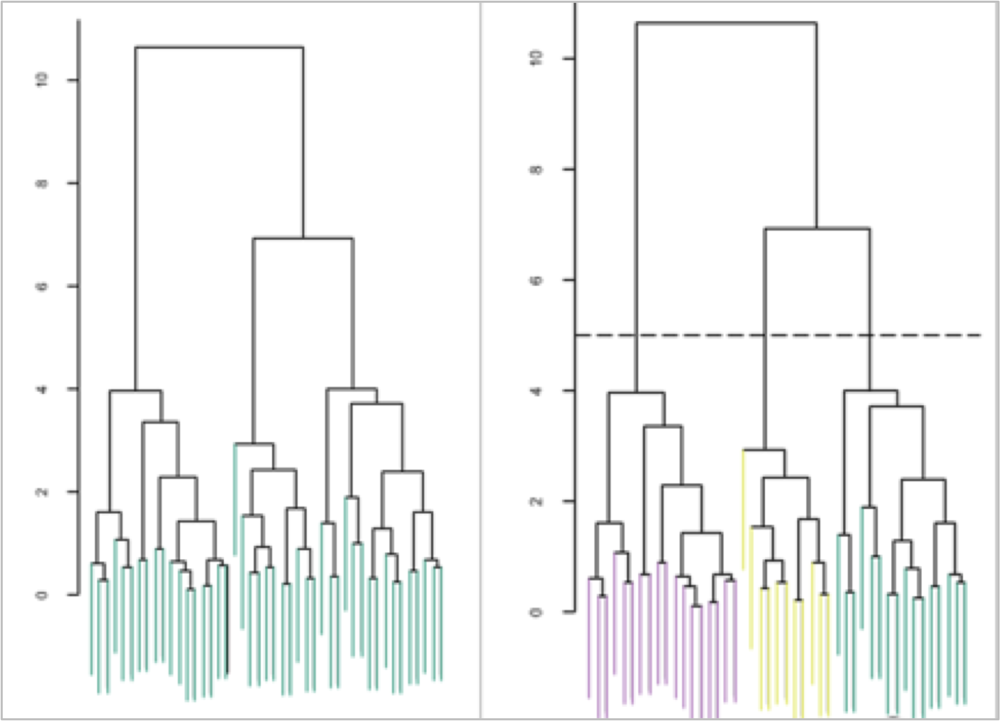
- Left: Dendrogram obtained from hierarchically clustering the data from previous slide, with complete linkage and Euclidean distance
- Right: The dendrogram from the left-hand panel, now cut at a height of 5. This cut results in three distinct clusters, shown in different colors. Note that the colors were not used in clustering, but are simply used for display purposes in this figure
Types of Linkage—1
| Linkage | Discription |
|---|---|
| Complete | Maximal inter-cluster dissimilarity. Compute all pairwise dissimilarities between the observations in cluster A and the observations in cluster B and record the largest of these dissimilarities. |
| Single | Minimal inter-cluster dissimilarity. Compute all pairwise dissimilarities between the observations in cluster A and the observations in cluster B and record the smallest of these dissimilarities |
| Average | Mean inter-cluster dissimilarity. Compute all pairwise dissimilarities between the observations in cluster A and the observations in cluster B and record the average of these dissimilarities. |
| Centroid | Dissimilarity between the centroid for cluster A (a mean vector of length p) and the centroid for cluster B. |
Types of Linkage—2
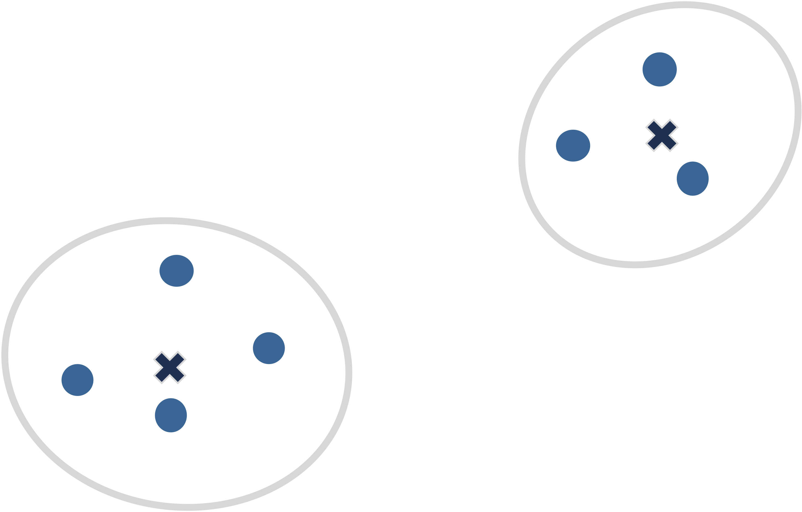Choice of Dissimilarity Measure
- Euclidean distance
- An alternative is correlation-based distance which considers two observations to be similar if their features are highly correlated
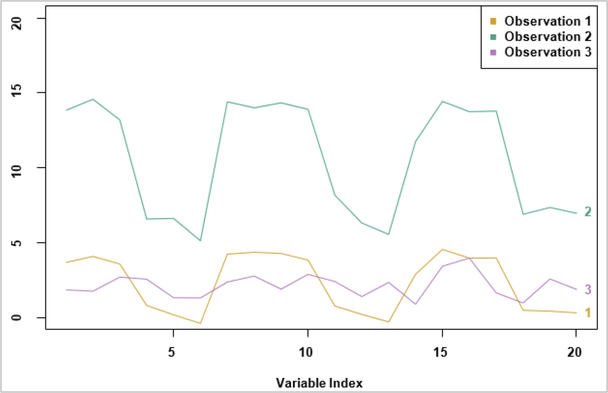
Practical Issues
- Scaling of the variables
- In the case of hierarchical clustering,
- What dissimilarity measure should be used?
- What type of linkage should be used?
- How many clusters to choose?
- K-means, value of k?
- Hierarchical clustering, where to cut?
- Which features should we use to drive the clustering?
Example: Breast Cancer Microarray Study
- “Repeated observation of breast tumor subtypes in independent gene expression data sets;” Sorlie at el, PNAS 2003
- Gene expression measurements for about ∼ 8000 genes, for 88 breast cancer patients
- Clustered samples using 500 intrinsic genes:
- Each woman was measured before and after chemotherapy
- Intrinsic genes have smallest within/between variation
- Hierarchical clustering with average linkage and correlation as dissimilarity metric

Conclusions
- Unsupervised learning is important for understanding the variation and grouping structure of a set of unlabeled data
- It is intrinsically more difficult than supervised learning
- no gold standard (like an outcome variable)
- no single objective (like test set accuracy)
- It is an active field of research